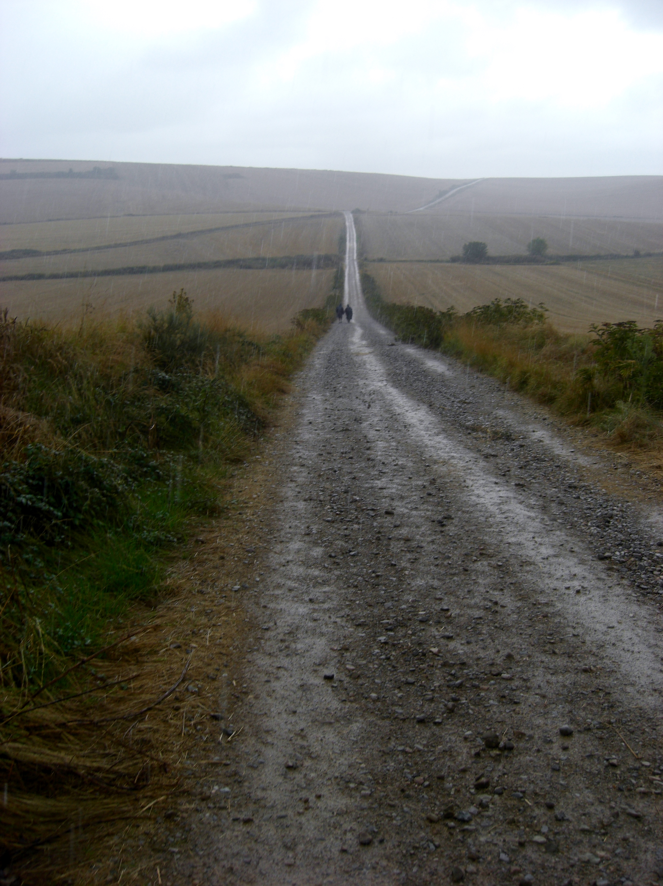

Needs wählen Choose needs Elegir necesidades
Zum Beispiel Wasser, Apotheke, Schlafplatz, Essen oder Stempel. For example water, pharmacy, sleep, food or stamp. Por ejemplo agua, farmacia, alojamiento, comida o sello.
Camino Francés · Saint-Jean-Pied-de-Port bis Santiago Camino Francés · Saint-Jean-Pied-de-Port to Santiago Camino Francés · Saint-Jean-Pied-de-Port a Santiago
Ultreia ist als ruhige App für Pilger gedacht: Needs wählen, Handy wegstecken, und nur dann einen Hinweis bekommen, wenn etwas Relevantes in der Nähe ist. Ultreia is designed as a quiet app for pilgrims: choose your needs, put the phone away, and hear from it only when something relevant is nearby. Ultreia está pensada como una app tranquila para peregrinos: eliges tus necesidades, guardas el móvil y recibes avisos solo cuando algo relevante está cerca.
Bett · Essen · Wasser · Apotheke · Stempel · Hinweise Bed · Food · Water · Pharmacy · Stamp · Hints Cama · Comida · Agua · Farmacia · Sello · Avisos
Früher MVP · Camino Francés · Keine Verfügbarkeitsgarantie Early MVP · Camino Francés · No availability guarantee MVP temprano · Camino Francés · Sin garantía de disponibilidad
Was ist Ultreia? What is Ultreia? ¿Qué es Ultreia?
Die Idee ist einfach: Die App soll Wegkontext, Nähe und deine aktuellen Bedürfnisse zusammenbringen. Nicht als lauter Tourismus-Guide, sondern als zurückhaltender Hinweisgeber für den Moment, in dem es wirklich hilft. The idea is simple: the app should connect route context, proximity and your current needs. Not as a loud tourism guide, but as a calm signal when it is useful. La idea es sencilla: la app conecta el contexto de la ruta, la cercanía y tus necesidades actuales. No como una guía turística ruidosa, sino como una señal discreta.

Wie funktioniert es? How it works Cómo funciona
Zum Beispiel Wasser, Apotheke, Schlafplatz, Essen oder Stempel. For example water, pharmacy, sleep, food or stamp. Por ejemplo agua, farmacia, alojamiento, comida o sello.
Ultreia soll im Hintergrund auf relevante Nähe achten. Ultreia is meant to watch quietly for relevant proximity. Ultreia observa en silencio si hay algo relevante cerca.
Ort, Zeit, Wegnähe und Bedürfnis müssen zusammenpassen. Place, time, route proximity and need should fit together. Lugar, momento, cercanía a la ruta y necesidad deben coincidir.

Für wen? Who it is for Para quién
Besonders für Menschen auf dem Camino Francés, die unterwegs klare Bedürfnisse haben, aber nicht dauernd Karten, Listen oder Suchergebnisse prüfen möchten. Especially for people on the Camino Francés who have clear needs on the way, but do not want to keep checking maps, lists or search results. Especialmente para personas en el Camino Francés que tienen necesidades claras, pero no quieren revisar mapas, listas o búsquedas todo el tiempo.
Camino-Francés-Scope Camino Francés scope Alcance Camino Francés